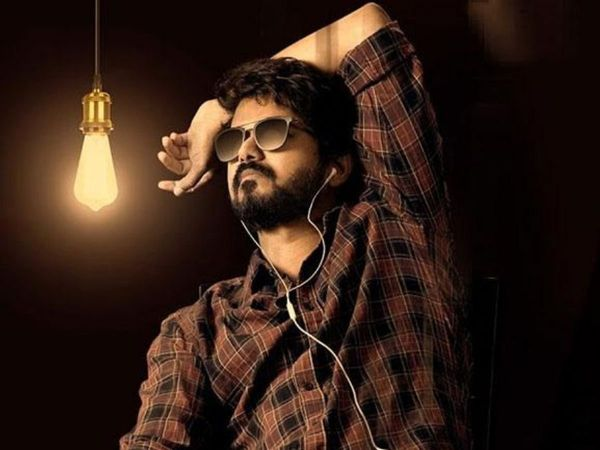

I can push to github.com
mama i can code now
New code changed
peragraph, more peragraph
I am coding coding coding
Master is a 2021 Indian Tamil-language action drama film[6] written and directed by Lokesh Kanagaraj. Produced by Xavier Britto, under his maiden production house XB Film Creators, the film stars Vijay and Vijay Sethupathi while Malavika Mohanan, Shanthanu Bhagyaraj, Andrea Jeremiah, Arjun Das and Gouri G. Kishan play supporting roles. The film revolves around an alcoholic professor, J. D. (Vijay), who takes a three-month teaching job in a juvenile home, unbeknownst to him. He soon clashes with a ruthless gangster named Bhavani (Vijay Sethupathi), who uses the children as the scapegoat for his criminal activities.
